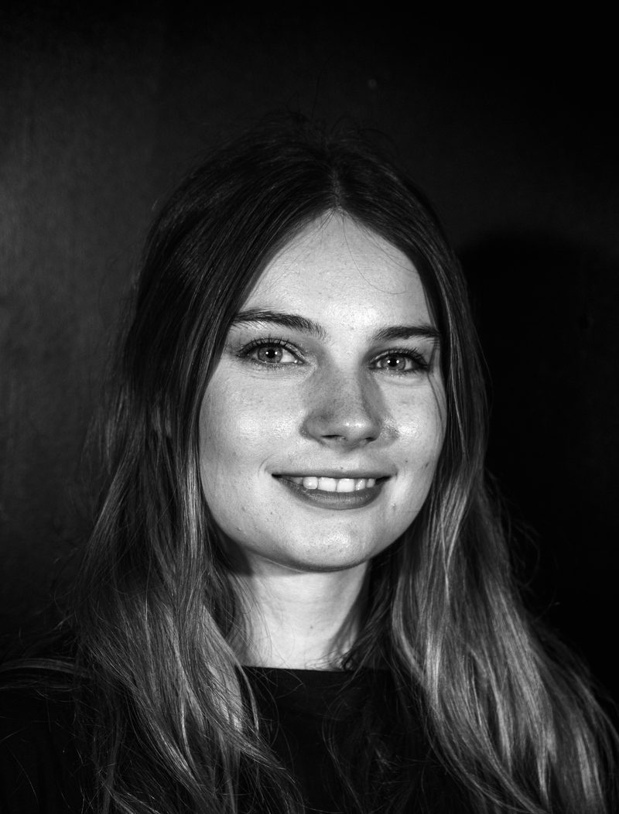

CHARLEY TUSLER
Vision Technician & Emerging Designer
I'm a Meanjin (Brisbane) based vision technician and emerging designer with hands-on experience across multiple technical fields, including vision, lighting and audio. I've worked on a range of events, from student theatre to large-scale festivals, both independently and as part of diverse teams.
Over the past 3 years I have worked as a vision and lighting technician for multiple Brisbane based production companies/venues, whilst studying my Bachelor of Fine Arts in Technical Production at QUT. My work and study have given me incredible opportunities to build my skills and valuable hands-on experience across all areas of the live production industry. Primarily, my experience is in vision, and I have worked as an LED screen technician and vision operator for a multitude of events including Dark Mofo, Ultra Beach Gold Coast, and Rolling Sets.
Alongside my technical experience, I have been developing my skills as a visual designer and artist, creating works using live cameras and interactive technology for QUT Acting's Incognito, Freshblood Festival's Winging It and my university works LIVE/FEED and Deflection.
As I reach the end of my degree, I aim to expand my experience into design and continue working with visual technology to create experiences that connect with audiences.